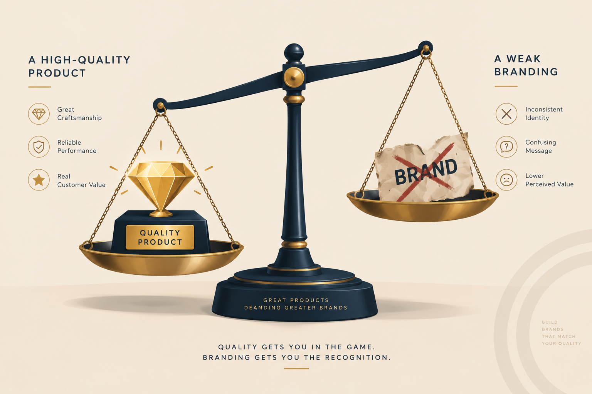
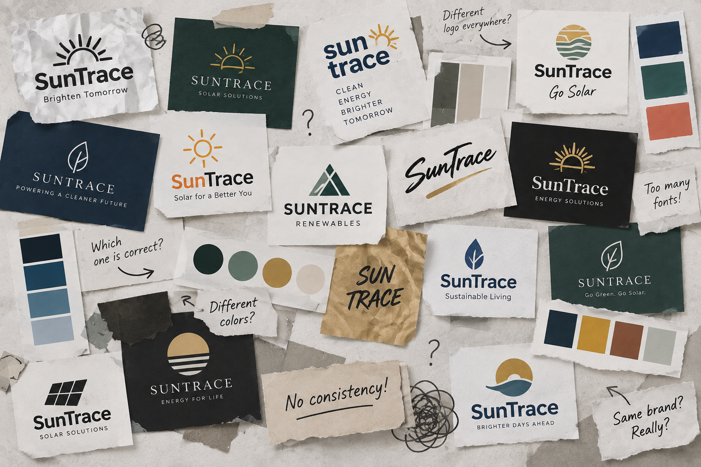
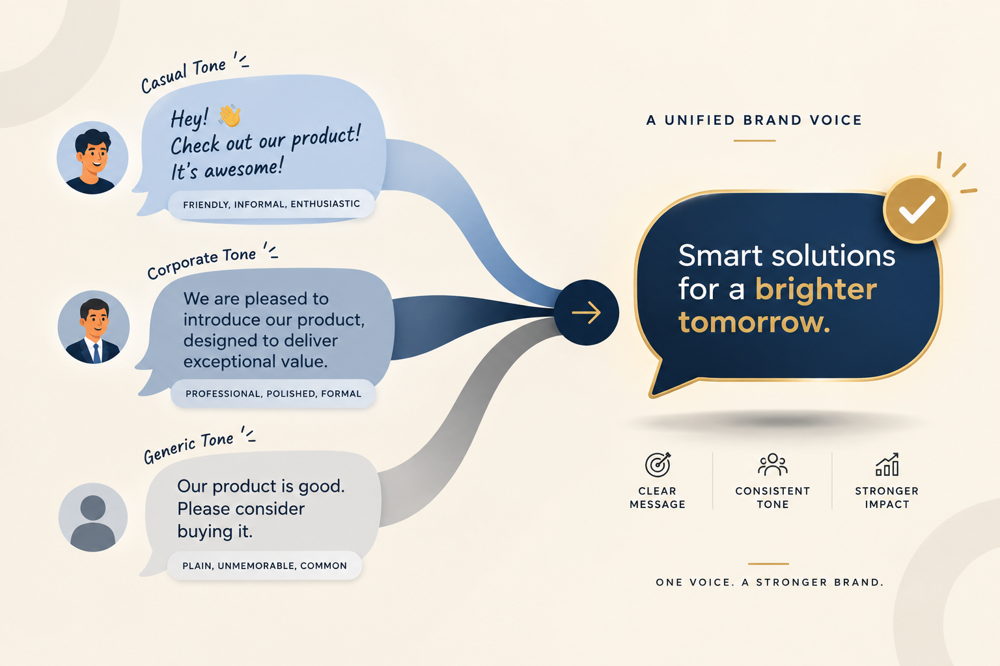
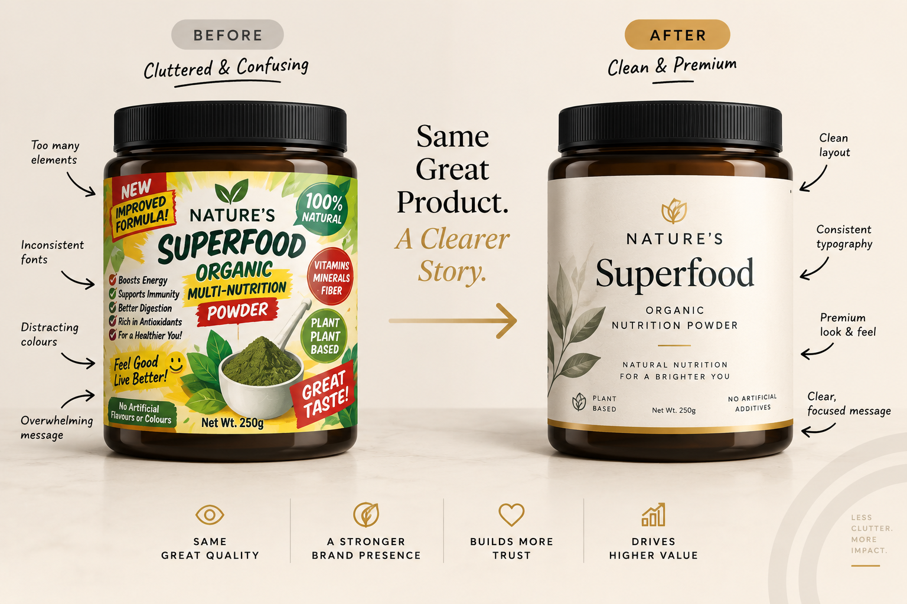
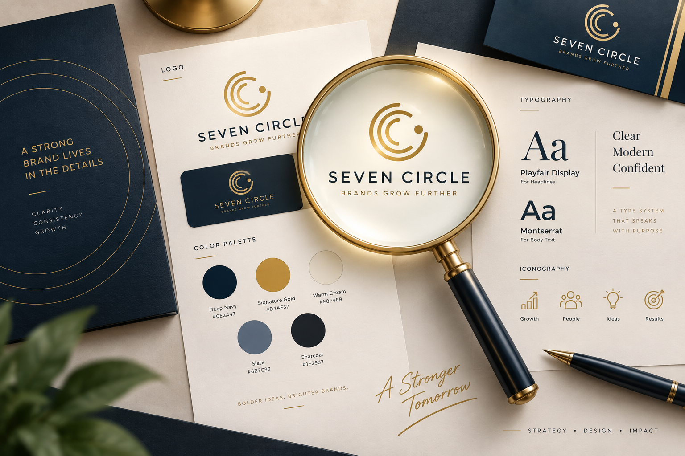

You know your product is excellent. You have obsessed over the quality, the materials, the formula and the craftsmanship. Customers who actually try it love it.
But something is off. People hesitate at your price point. They compare you to cheaper alternatives. They do not feel excited to buy from you — they feel like they are taking a chance.
Customers cannot taste, touch or test your product before they buy it. All they have is perception. If your branding does not communicate quality before the sale, product excellence cannot fix the first impression.
Your product is good. Your brand is telling people otherwise.
Good product is not
enough anymore.
In a market flooded with options, customers make split-second judgements based almost entirely on how a brand presents itself — long before they experience the product.
A premium feel is not about being expensive. It is about signaling confidence, consistency and care in every touchpoint, visually and verbally, before a customer ever swipes their card.
If those signals are missing or inconsistent, customers unconsciously downgrade their expectations of quality and price, no matter how good the product actually is.

Six signs your branding
is undermining the product.
1. Inconsistent visual identity
Different fonts, colours and logo versions across your website, packaging and social media create a subconscious sense of disorganization. Disorganization reads as unreliable, not premium.
The fix: Lock in one primary font pairing, a defined colour palette and a single logo system, then apply it everywhere.
2. A logo that looks like a placeholder
If your logo feels generic, overly complex or like a default template, it signals “still figuring it out” rather than “established and confident.”
The fix: Use a purposeful, simple and scalable mark that works on a tiny icon, packaging and a storefront sign.

3. Weak or inconsistent brand voice
Sounding casual in one post, corporate in an email and generic in an ad makes customers feel like they are dealing with three different companies.
The fix: Define three or four tone words — such as confident, warm and direct — and use them consistently.

4. Low-quality or inconsistent photography
Blurry product shots, mismatched lighting or stock photos that do not match the real product create doubt before anyone reads the description.
The fix: Invest in consistent, well-lit photography with a unified style. It is often the highest-leverage improvement for perceived quality.
5. Cluttered, DIY-feeling packaging or website design
Overcrowded layouts, too many fonts, competing colours and unclear hierarchy signal amateur effort, regardless of how good what is inside actually is.

The fix: Simplify. Premium brands almost always use more white space, fewer fonts and a clearer visual hierarchy than budget competitors.
6. No clear brand story or point of difference
If a customer cannot quickly answer “Why this brand, and not the cheaper one next to it?”, price becomes the only differentiator left.
The fix: Articulate what makes the brand different — values, process or origin — and make it visible on the website and packaging, not just in your head.
Find the gap between
quality and perception.
Use these questions to see whether the way the brand presents itself is underselling the product.
| Question | If yes, you may have a perception gap |
|---|---|
| Do people say “I did not expect this quality” after trying the product? | Your branding may be underselling what the product delivers. |
| Do you often compete on price rather than value? | Your positioning may not be communicating worth clearly enough. |
| Does the website or packaging look different from social media? | Inconsistency is quietly weakening trust. |
| Would a stranger guess your price point from the visuals alone? | If not, there is a mismatch between presentation and pricing. |
Fixing the gap
pays for itself.
Perceived quality directly impacts what customers are willing to pay — not only whether they buy, but how much they buy at.
- Higher price toleranceCustomers justify paying more when the brand feels worth it.
- Lower acquisition costTrust-signaling brands convert cold traffic faster.
- Stronger repeat and referral ratesPeople are proud to be associated with brands that feel considered and confident.
Fixing your branding is not a cosmetic expense. It is a direct lever on your margins.
Make the brand match
the real value.
At Seven Circle, we specialise in closing the gap between how good a product is and how premium it feels before the sale.

- Visual identity systemsLogo, colour palette and typography built for consistency across every platform.
- Brand voice and messagingFrameworks that make the copy sound like one confident brand everywhere.
- Packaging and website directionDesign that reflects the real price point and positioning.
- Connected executionContent creation, copywriting and website development reinforcing the same impression.
Your product already earns trust once people try it. The goal is to make the branding earn that same trust before they buy.
Questions worth
asking first.
Does premium branding mean raising prices?
Not necessarily. It means the branding accurately reflects the value already being delivered, which often allows you to price more confidently.
Can a small business achieve premium branding on a limited budget?
Yes. Consistency and simplicity — not spending the most money — are the biggest drivers of perceived quality.
How long does a brand refresh usually take?
A focused identity refresh typically takes three to six weeks, depending on the number of touchpoints involved.
Do I need to rebrand completely?
Most businesses do not. A phased rollout of a clearer visual and verbal identity is often more practical than starting from zero.
- Perception is part of the product experience.
- Consistency creates confidence.
- Premium is a feeling of care, not a price tag.
Your product already deserves to be valued. Make sure the brand tells people why before they have to take a chance.
Book a free brand audit ↗